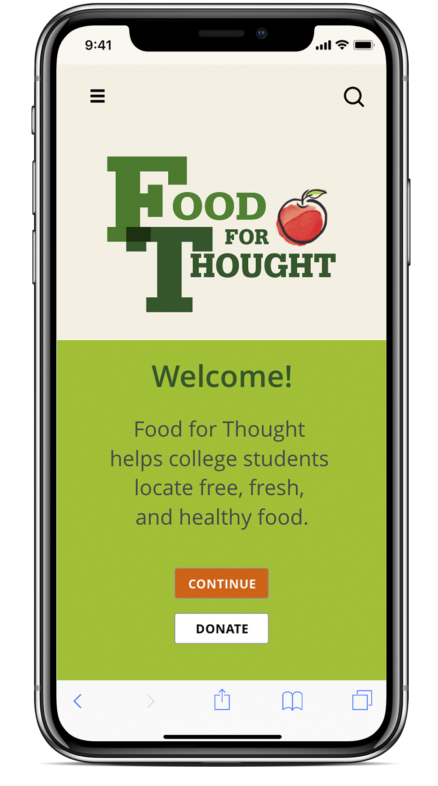

HOOK
Food For Thought
College Food Pantry Finder
Hunger among college students continues to increase, impacting student’s daily lives and their ability to finish their education.
Food for Thought is a resource to connect students who are experiencing food insecurity with campus resources that already exist, helping them locate fresh, healthy food.
